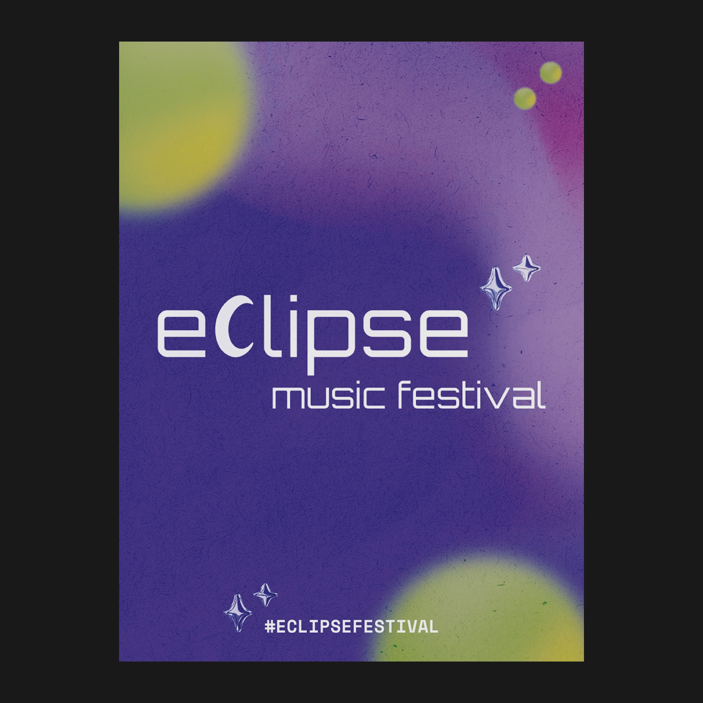

About Me
Hello, I’m Asude Çalış, a Visual Communication Design student who is also studying Business Administration. Combining creative thinking with a business perspective allows me to approach design with both expression and purpose. I work across visual identity, social media, poster and brand design, creating clear and memorable forms of visual communication.
Discover moreWorks
Explore my selected works across different areas of visual communication and graphic design.
View all worksContact